50 saved questions rebuilt from local capture only. Missed: Q1, Q3, Q5, Q9, Q11, Q19, Q41, Q46, Q50.
Q1
hard QID 20935
Incorrect
A 43-year-old male patient with persistent abdominal pain and gastrointestinal bleeding undergoes angiography and scintigraphy. Which of the following is the most likely diagnosis?
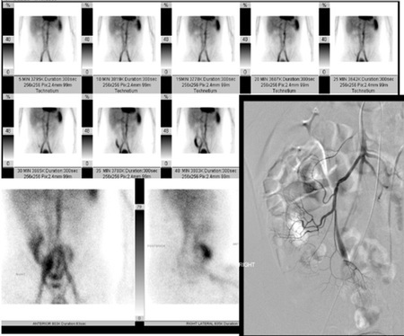
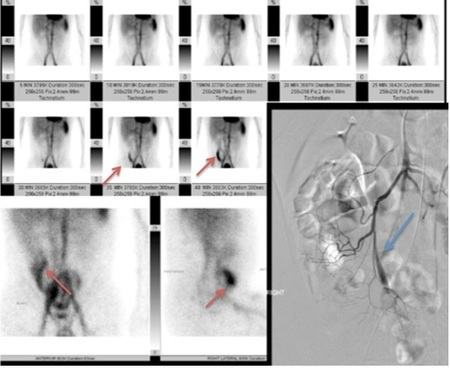
AAngiodysplasia(33%)
BColonic bleeding diverticulum(13%)
CCecal artery aneurysm(2%)
DIleocecal artery occlusive disease(1%)
EMeckel’s diverticulum(50%)
Your answerB
Correct answerE. Meckel’s diverticulum
Explanation
Meckel’s diverticulum
A dynamic tagged Tc99m red blood cell (RBC) scan is presented and shows a persistent collection of radiotracer within the right lower quadrant (red arrows) without significant forward movement through the gastrointestinal (GI) tract. The associated finding on angiography of a prominent vitelline artery (blue arrow) should raise the concern for the presence of Meckel’s diverticulum.
Meckel’s diverticula are a persistent outpouching due to persistent, noninvoluting omphalomesenteric (vitelline) duct. Approximately 50% of them will contain ectopic gastric mucosa. In this case, free Tc99m pertechnetate not bound to RBCs accumulates in the right lower quadrant due to the presence of gastric mucosa. The presence of the vitelline artery on angiography is most commonly seen in association with Meckel's and further supports the diagnosis.
Remember the rule of 2’s when thinking about Meckel’s diverticula: 2% prevalence, 2 inches long, within 2 feet of the ileocecal valve, and more commonly symptomatic before age 2.
Incorrect Answers:
A. Colonic angiodysplasia would demonstrate multiple abnormal vascular collections along the colic artery distributions, which may or may not demonstrate contrast extravasation to suggest bleeding. This is not seen here.
B. No contrast extravasation is seen to suggest bleeding in this case.
C. No aneurysms are seen in this case.
D. No evidence of ileocecal artery occlusion is demonstrated on the angiographic images.
Q2
easy QID 2674
Correct
A 56-year-old female undergoes core biopsy for amorphous calcifications seen on mammography. Pathologic analysis shows atypical ductal hyperplasia. Which of the following is the best next step in management?
AFollow up in 6 months(2%)
BFollow up in 12 months(1%)
CRepeat core biopsy(1%)
DExcisional biopsy(97%)
Your answerD
Correct answerD. Excisional biopsy
Vital Concept
After diagnosis of atypical ductal hyperplasia by core biopsy, a larger sample should be obtained by excisional biopsy to better assess for the possibility of associated undersampled DCIS.
Explanation
Excisional biopsy
Under a microscope, atypical ductal hyperplasia (ADH) and low-grade ductal carcinoma in situ (DCIS) have very similar appearances with both demonstrating atypical epithelial cells at pathology. ADH presents with atypical epithelial cells filling fewer than 2 duct spaces or less than 2 mm in greatest dimension; DCIS demonstrates the same cells, but in more than 2 ducts or measuring greater than 2 mm in greatest dimension. As such, when ADH is detected, excisional biopsy is indicated to assess for the possibility of DCIS that may have been incompletely sampled. Upgrade of diagnosis from ADH to DCIS after excisional biopsy occurs in approximately 25% of cases. Patients who have ADH are at increased risk of future breast cancer, and the risk is increased for breasts.
Incorrect Answers:
A., B. No follow-up is recommended in atypical ductal hyperplasia as it may contain focus of ductal carcinoma in situ.
C. As it is diagnosed as atypical ductal hyperplasia, we do not need a rebiopsy.
Vital Concept: After diagnosis of atypical ductal hyperplasia by core biopsy, a larger sample should be obtained by excisional biopsy to better assess for the possibility of associated undersampled DCIS.
Q3
hard QID 18081
Incorrect
How often should the accuracy of the device shown below be tested?
ADaily(19%)
BMonthly(11%)
CQuarterly(15%)
DYearly(55%)
Your answerC
Correct answerD. Yearly
Vital Concept
Quality control of dose calibrators is a requirement of the Nuclear Regulatory Commission. Yearly accuracy tests should be performed.
Explanation
Yearly
Incorrect Answers:
A. Daily constancy tests must be performed.
B. No monthly check is indicated.
C. Quarterly linearity tests should be performed.
Vital Concept: Quality control of dose calibrators is a requirement of the Nuclear Regulatory Commission. Yearly accuracy tests should be performed.
Q4
QID 5010
Correct
A 31-year-old female comes into the emergency department, unresponsive, with concern for drug toxicity. She spends multiple weeks in the ICU on ventilator support with no change in her clinical status. A CT scan of the head is ordered and is unremarkable. A nuclear medicine scan is ordered and is shown below. The findings are compatible with what diagnosis?
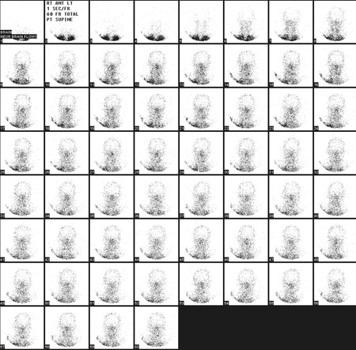
ANormal scan(0%)
BBrain death(100%)
CDiffuse cerebral hemorrhage(0%)
DStroke(0%)
Your answerB
Correct answerB. Brain death
Vital Concept
Tc-99m-HMPAO with no brain uptake is consistent with absent cerebral perfusion. This brain-specific agent confirms brain death when correlated with clinical findings.
Explanation
Brain death
A normal brain perfusion scan should demonstrate prompt uptake of radiotracer within brain tissue. Coronal planar images of the brain shown here demonstrate no uptake; this is likely a result of a combination of diffuse cerebral edema which results in blockage of blood flow to the brain. The diagnosis of brain death is primarily clinical and is characterized by lack of brainstem reflexes/respiration and exclusion of reversible causes of the coma. Radiologic imaging is used to confirm, not supplant, clinical judgment.
Incorrect Answers:
A. The study shown is taken from a Tc-99m-HMPAO scan to assess for brain perfusion. There is absent perfusion within the calvarium, hence the study is not normal.
C. Focal hemorrhage will show as areas of photopenia on a brain flow scan. However, this study demonstrates no flow throughout the brain, consistent with brain death. In addition, the head CT of the patient was negative, further disproving this as a possible choice.
D. A brain infarct will show as areas of photopenia on a brain flow scan. The complete lack of blood flow through the brain parenchyma, however, is consistent with a more ominous diagnosis, in this case, brain death.
Vital Concept: Tc-99m-HMPAO with no brain uptake is consistent with absent cerebral perfusion. This brain-specific agent confirms brain death when correlated with clinical findings.
Q5
hard QID 37568
Incorrect
Which of the following tumor phenotype is expected to have the highest SUVmax?
FDG uptake (and thus SUVmax) correlates with breast cancer grade, tumor proliferation index, and more recently, tumor phenotype. Tumors with a triple-negative phenotype have been shown to have higher FDG uptake, on average.
Estrogen receptor -, progesterone receptor -, HER2/neu-, or a triple-negative breast cancer.
Triple-negative breast cancer (TNBC) typically exhibits the highest SUVmax values among breast cancer subtypes. This reflects the aggressive nature and high metabolic activity of TNBC tumors. The hierarchy generally follows: TNBC > HER2-positive > hormone receptor-positive tumors, with luminal A subtype showing the lowest FDG uptake due to their less aggressive, slower-growing characteristics.
Incorrect Answers:
A.C.D. Incorrect as described above.
Vital Concept: FDG uptake (and thus SUVmax) correlates with breast cancer grade, tumor proliferation index, and more recently, tumor phenotype. Tumors with a triple-negative phenotype have been shown to have higher FDG uptake, on average.
Q6
easy QID 4956
Correct
A 56-year-old male presents to the emergency department with chest pain. Physical exam is significant for jugular venous pulsation. A chest radiograph and CT scan are performed and shown below. Which of the following best explain the findings denoted by the arrows?
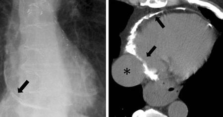
AMyocardial infarction(2%)
BMyocarditis(2%)
CPericarditis(90%)
DHemopericardium(1%)
EAnderson-Fabry disease(5%)
Your answerC
Correct answerC. Pericarditis
Vital Concept
CT is superior for detecting pericardial calcifications and effective in detection of secondary signs like superior vena cava dilation, though calcifications are less common in modern cases and their absence does not exclude constrictive pericarditis.
Explanation
Pericarditis
Imaging findings demonstrate pericardial calcifications (displayed by the black arrows) in addition to an engorged superior vena cava (displayed by the asterisk), which are consistent with constrictive pericarditis.
Incorrect Answers:
A. Imaging findings are consistent with constrictive pericarditis, not myocardial infarction. The myocardium is not involved in this case. Findings of myocardial infarction on MRI include regional subendocardial or transmural delayed enhancement and myocardial edema in a vascular distribution.
B. Imaging findings are consistent with constrictive pericarditis, not myocarditis. The myocardium is not involved in this case. Myocarditis typically demonstrates patchy mesocardial or subepicardial delayed enhancement.
D. Hemopericardium is not present in this case.
E. Cardiomyopathy in Anderson-Fabry disease is related to abnormal deposition of sphingolipids within the myocardium.
Vital Concept: CT is superior for detecting pericardial calcifications and effective in detection of secondary signs like superior vena cava dilation, though calcifications are less common in modern cases and their absence does not exclude constrictive pericarditis.
Q7
moderate QID 56827
Correct
Which of the following is true, based on the images below?
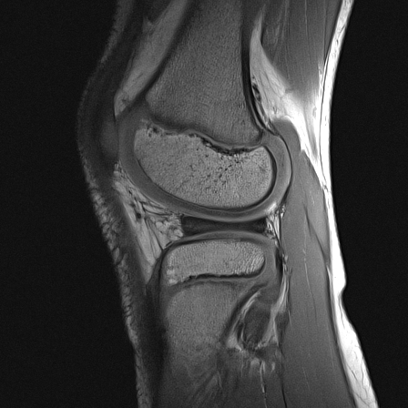
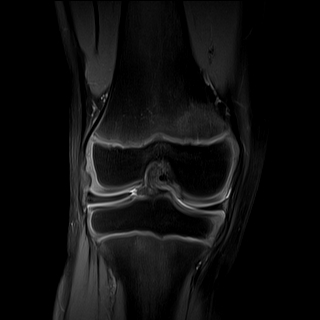
ALateral compartment is more commonly affected than medial compartment(82%)
BIncidence of meniscal tear is equal to that in general population(2%)
CTreatment is arthroscopic saucerization of meniscus, even in children with no tear(11%)
DThis entity is acquired at young age(5%)
Your answerA
Correct answerA. Lateral compartment is more commonly affected than medial compartment
Explanation
Lateral compartment is more commonly affected than medial compartment
MRI images depict a lateral discoid meniscus, demonstrated by the loss of meniscal tapering-wedge shape. This represents the failure of resorption of the central meniscal substance during embryogenesis. The lateral compartment is more commonly affected than the medial compartment, and disease is bilateral in up to 20% of patients.
Incorrect Answers:
B. Meniscal tears are more common compared to the general population, and development of intrameniscal mucinous degeneration or cysts can occur.
C. Treatment is typically conservative in children without meniscal tear, but arthroscopic saucerization is recommended in a symptomatic adult.
D. This entity is typically congenital, not acquired.
Q8
QID 56297
Correct
Which of the following describes the bone marrow within the vertebral bodies above and below the metastatic lesion shown in the thoracic spine image below?
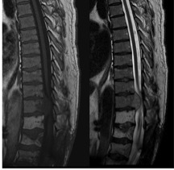
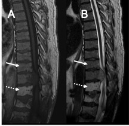
AThere is pathologic marrow both above and below the vertebral body lesion, indicative of metastatic disease.(5%)
BThere is pathologic bone marrow above the metastatic lesion and normal bone marrow distal to the metastatic lesion.(8%)
CThere is normal bone marrow above the metastatic lesion and diffuse, intra-osseous metastatic disease within the vertebral bodies below the mass lesion.(10%)
DThere is normal bone marrow above the metastatic lesion and fatty replacement of the bone marrow below, indicative of prior radiation therapy.(76%)
Your answerD
Correct answerD. There is normal bone marrow above the metastatic lesion and fatty replacement of the bone marrow below, indicative of prior radiation therapy.
Explanation
There is normal bone marrow above the metastatic lesion and fatty replacement of the bone marrow below, indicative of prior radiation therapy.
Proximal to the metastatic mass lesion, in the lower thoracic spine, the bone marrow demonstrates normal T1- and T2-weighted signal (solid arrow, images A and B). Specifically, on T1-weighted images (Image A), the marrow is slightly brighter than muscle and slightly brighter than the metastatic lesion.
On T2-weighted images (Image B), the marrow is of uniform signal intensity, without focal lesions, and similar to the surrounding soft tissue but darker than fluid. Inferior to the mass lesion, there is uniform high T1 and T2 signal within the vertebral bodies, indicative of high-fat content, and compatible with previous ionizing radiation therapy (in this case, for treatment of the previously resected sacral mass and operative site) (dashed arrow).
Incorrect Answers:
A. The bone marrow signal above and below the lower thoracic mass is not indicative of metastatic disease. Specifically, the marrow above the mass is a normal-appearing mix of cellular (red) marrow and fat content (yellow marrow), and the vertebral bodies below the mass demonstrate complete fatty replacement (not increased cellularity to suggest metastatic disease).
B. The bone marrow proximal to the mass lesion is normal, demonstrating a mix of fat and red marrow signal. The bone marrow distal to the mass lesion is abnormal, demonstrating complete fatty replacement related to prior radiation therapy.
C. Bone marrow distal to the mass lesion is not compatible with metastatic disease. There is high T1- and T2-weighted signal indicative of complete fatty replacement.
Q9
hard QID 22591
Incorrect
An 8-year-old male patient presents with worsening headaches and altered mental status. Which of the following is the most likely diagnosis?
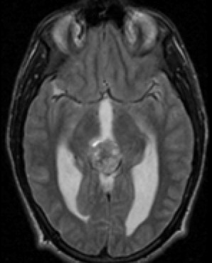
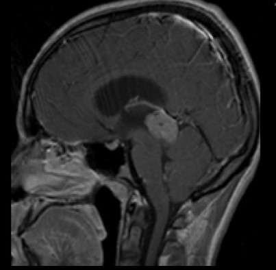
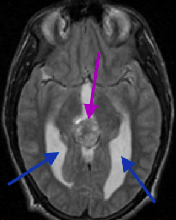
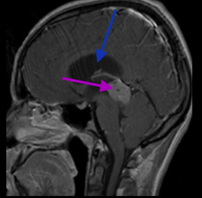
APineocytoma(29%)
BRetinoblastoma(1%)
CGerminoma(66%)
DCraniopharyngioma(2%)
EMedulloblastoma(2%)
Your answerA
Correct answerC. Germinoma
Vital Concept
Pineal germinoma shows "engulfed" calcification with homogeneous enhancement and clear boundaries. Demonstrates restricted diffusion with reduced ADC values. Typically, isointense to hyperintense on T2-weighted images with isointense or slightly hyperintense signal on susceptibility imaging.
Explanation
Germinoma
Germinoma is a common midline lesion arising in the pineal gland and suprasellar regions. They tend to present with endocrinopathies when in the suprasellar location, while pineal region masses tend to produce obstructive hydrocephalus (blue arrows) and Parinaud syndrome by tectal compression. They present in young patients, usually the first and second decades of life. There is a strong predilection for males. They tend to be well-circumscribed, hyperdense to the brain parenchyma, with prominent enhancement on post-contrast imaging.
On MRI, they tend to be iso- or hyperintense to grey matter on T1- and T2-weighted imaging. They may contain internal T2 hyperintense cystic/necrotic foci (seen here – purple). One characteristic finding of pineal germinomas is that they tend to “engulf” pineal calcifications, while pineoblastomas and pineocytomas tend to “explode” pineal calcifications. Overall, when distinguishing from pineocytomas (the main differential), germ cell tumors tend to be more heterogeneous with cystic components (T2 hyperintense, T1 hypointense, non-enhancing) whereas pineocytomas will be much more homogeneous. Additionally, germinomas have a proclivity for growing along the ependymal surface and extending into the third ventricle. Lumbar punctures can be useful in detecting hCG or AFP within the CSF.
Incorrect Answers:
A. Pineocytomas are parenchymal tumors of the pineal gland composed of mature cells resembling pinealocytes. They typically appear as a well-defined pineal mass with “exploded” pineal calcifications rather than the “engulfed” pineal calcifications seen in germinomas. They may have internal enhancement as well as cystic components. They are not often invasive but tend to cause symptoms related to compression, with compression of the cerebral aqueduct producing hydrocephalus and headache, as well as Parinaud syndrome (paralysis of upward gaze) related to compression of the tectum. Though they may occur at any age, they are more common in patients of middle age.
B. Retinoblastoma is a malignant tumor of the neuroectodermal cells most commonly affecting the retina but may also be seen in midline intracranial structures such as the pineal gland (trilateral retinoblastoma) or suprasellar region. They most frequently appear as calcified intraocular masses with heterogeneous enhancement.
D. Craniopharyngiomas are benign WHO grade I tumors arising in the sellar region from remnants of Rathke's pouch epithelium. They are typically large, lobular lesions with internal cystic components and prominent calcifications. The cysts are of variable signal intensity on T1- and T2-weighted imaging, depending on their contents. They typically have marked enhancement, especially at the cyst walls. There are two types: adamantinomatous and papillary. Adamantinomatous type is most common in pediatric populations and demonstrates the typical solid/cystic appearance with internal calcification and hemorrhage. Papillary type is more common in adults and is typically solid with infrequent calcification.
E. Medulloblastoma is a WHO grade IV tumor arising from the superior medullary velum in the roof of the fourth ventricle (in children) and from the cerebellar hemisphere (more lateral, more common in adults). They tend to be spherical in shape and are hyperdense but heterogeneously calcified and hemorrhagic on CT, typically enhancing after administration of contrast. On MRI they are often markedly heterogeneous on T1- and T2-weighted imaging with heterogeneous enhancement and characteristic restricted diffusion. They characteristically spread by subarachnoid seeding and as such, the entire neuraxis should be imaged prior to surgical resection. They typically present with posterior fossa signs such as ataxia and cranial neuropathies.
Vital Concept: Pineal germinoma shows "engulfed" calcification with homogeneous enhancement and clear boundaries. Demonstrates restricted diffusion with reduced ADC values. Typically, isointense to hyperintense on T2-weighted images with isointense or slightly hyperintense signal on susceptibility imaging.
Q10
hard QID 18088
Correct
A 34-year-old male patient presents to the ED after unrestrained motor vehicle collision. Vital signs are stable. Which of the following is the treatment for this lesion?
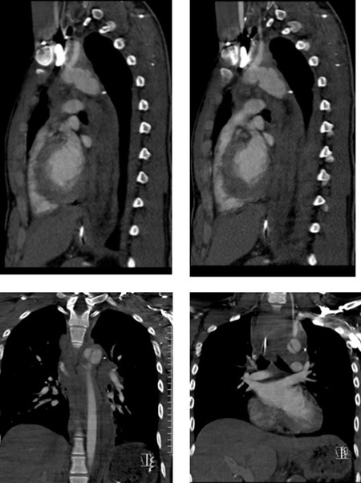
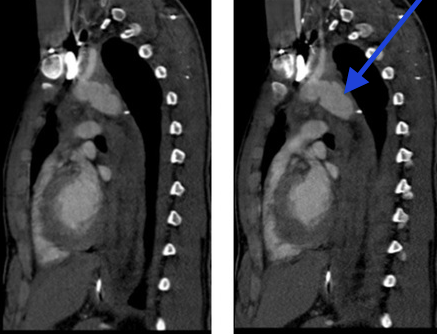
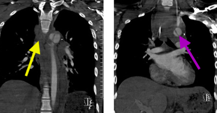
AExpectant management(4%)
BBlood pressure management(21%)
CEmergent trauma bay thoracotomy(3%)
DSurgical management or endovascular therapy(72%)
EChest tube placement(0%)
Your answerD
Correct answerD. Surgical management or endovascular therapy
Explanation
Surgical management or endovascular therapy
In this case, the patient has suffered blunt force trauma resulting in a traumatic aortic pseudoaneurysm. This can be seen as an abnormal aortic contour (blue arrow) along the superior aspect of the arch. Note also the intimal flap (purple arrow) and mediastinal hematoma (yellow arrows). Pseudoaneurysms are essentially “contained ruptures” of vascular structures, which do not involve all layers of the vessel wall. They are most commonly traumatic in origin, whereas true aneurysms may be related to atherosclerosis, infection, or inflammatory diseases. The most common location for traumatic aortic pseudoaneurysms is at sites of relative fixation of the aorta (i.e., the ligamentum arteriosum or the aortic root).
While this abnormality occurs at the aortic arch, where true aneurysms and dissections (Stanford type B) may be treated with expectant management and blood pressure control, this is an unstable lesion that must be controlled either surgically or by endovascular stent grafting, which may differ from institution to institution.
Incorrect Answers:
A. Expectant management would not be appropriate in this case. This is an unstable lesion that requires urgent treatment.
B. Blood pressure management is an appropriate choice in the setting of an atraumatic thoracic aortic arch aneurysm, abdominal aneurysm, or Stanford type B dissection.
C. Emergent trauma bay thoracotomy would not be an appropriate choice here, as the patient’s vital signs are stable, and preparation can be made for transfer to an appropriate surgical theater. Additionally, survival rates for ER thoracotomies are exceedingly low.
E. Chest tube placement may eventually be needed to control any hemothorax or pneumothorax the patient may develop, but the most appropriate step to take for this patient is to prepare for definitive surgical or endovascular therapy.
Q11
hard QID 48111
Incorrect
Which of the following is the most likely diagnosis?
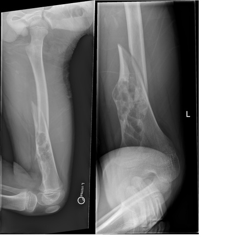
AMetastasis(5%)
BLeukemia(1%)
CEosinophilic granuloma(25%)
DNon-ossifying fibroma(67%)
ESimple fracture(2%)
Your answerC
Correct answerD. Non-ossifying fibroma
Vital Concept
Non-ossifying fibroma fracture risk is highest when lesions exceed 50% bone diameter expansion in both planes, most commonly occurring around the knee in distal femur and proximal tibia, with distal tibia having the highest fracture risk.
Explanation
Non-ossifying fibroma
Radiographs demonstrate a minimally displaced spiral metadiaphyseal pathologic fracture extending through the superior component of an expansile lytic lesion that has sclerotic borders. Of the diagnoses listed, non-ossifying fibroma is the most common benign lesion to appear lytic with sclerotic borders. The risk of fracture with these lesions is greatest if the lesion is more than 3.3cm in length or occupies a diameter of more than 50% of a weight-bearing bone.
Vital Concept: Non-ossifying fibroma fracture risk is highest when lesions exceed 50% bone diameter expansion in both planes, most commonly occurring around the knee in distal femur and proximal tibia, with distal tibia having the highest fracture risk.
Q12
easy QID 3023
Correct
A male patient reports distension of the abdomen. Ultrasound images are shown below. Which of the following is the correct diagnosis?
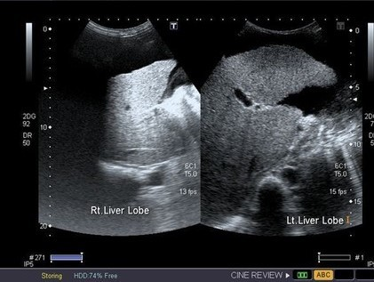
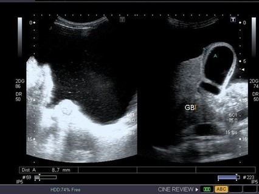
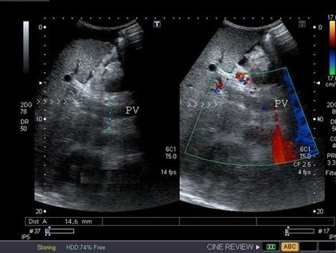
AA classic case of liver metastases with ascites(0%)
BLiver hemangioma with splenomegaly(0%)
CCirrhosis of liver with ascites and portal vein thrombosis(100%)
DFatty liver with ascites(0%)
EHydatid cyst of the liver(0%)
Your answerC
Correct answerC. Cirrhosis of liver with ascites and portal vein thrombosis
Vital Concept
Cirrhosis with nodular shrunken liver, ascites, and absence of portal vein flow with heterogeneous echogenicity indicates associated portal vein thrombosis. This is a common complication affecting up to a quarter of cirrhotic patients. Gallbladder wall thickening results from portal hypertension and hypoalbuminemia in advanced liver disease.
Explanation
Cirrhosis of liver with ascites and portal vein thrombosis
This is a classic case of cirrhosis of the liver with ascites, gallbladder wall thickening, and portal vein thrombosis. The ascites is very evident in the first image. In addition, the liver appears shrunken, nodular, and echogenic. There is thrombus evident in the color flow image of the portal vein. Gallbladder wall thickening is a common non-specific finding in the setting of ascites.
Incorrect Answers:
A. The ascites is plainly evident, but this is cirrhosis rather than metastasis.
B. Liver hemangiomas are seen as large rounded echogenic lesions. They are not associated with the multiple signs seen here.
D. The multiple features seen in these images cannot be explained by the diagnosis of fatty liver.
E. There is no evidence of any cystic lesions in the liver.
Vital Concept: Cirrhosis with nodular shrunken liver, ascites, and absence of portal vein flow with heterogeneous echogenicity indicates associated portal vein thrombosis. This is a common complication affecting up to a quarter of cirrhotic patients. Gallbladder wall thickening results from portal hypertension and hypoalbuminemia in advanced liver disease.
Q13
moderate QID 37596
Correct
For which of the following events does The Joint Commission mandate the use of root cause analysis (RCA)?
ASerious adverse events(0%)
BReviewable medication errors(0%)
CImproper medical device placement(0%)
DAll of the above(1%)
Your answerD
Correct answerD. All of the above
Vital Concept
Root cause analysis identifies both active errors (immediate human-system interface failures) and latent conditions (underlying system vulnerabilities) through structured multidisciplinary investigation, focusing on developing sustainable system-level solutions rather than quick fixes or individual blame to prevent adverse event recurrence.
Explanation
All of the above
RCA is a structured method used to analyze serious adverse events. Initially developed to analyze industrial accidents, RCA is now widely deployed as an error analysis tool in health care. A central tenet of RCA is identifying underlying problems that increase the likelihood of errors while avoiding the trap of focusing on mistakes made by individuals.
The goal of RCA is thus to identify both active errors (errors occurring at the point of interface between humans and a complex system) and latent errors (the hidden problems within health care systems that contribute to adverse events). The Joint Commission has mandated the use of RCA to analyze sentinel events (such as wrong-site surgery) since 1997.
Vital Concept: Root cause analysis identifies both active errors (immediate human-system interface failures) and latent conditions (underlying system vulnerabilities) through structured multidisciplinary investigation, focusing on developing sustainable system-level solutions rather than quick fixes or individual blame to prevent adverse event recurrence.
Q14
hard QID 20767
Correct
Given the location of the needle (white) in relation to the lesion (yellow) on these post-fire diagrams, what should the provider think of the location of the needle in relation to the lesion on this stereotactic biopsy diagram?
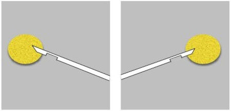
AGood position(12%)
BPositive z-axis error(11%)
CNegative z-axis error(71%)
DPositive y-axis error(2%)
ENegative y-axis error(4%)
Your answerC
Correct answerC. Negative z-axis error
Vital Concept
When performing a stereotactic breast biopsy, negative z-axis/depth error means that the needle is short of the lesion. Adjustment requires moving the needle in the direction of the positive z-axis/depth by pushing the needle forward.
Explanation
Negative z-axis error
Incorrect Answers:
A. B. Post-fire images demonstrate a negative z-axis/depth error. This means that the needle is short of the lesion.
D.E. No abnormality on y-axis.
Vital Concept: When performing a stereotactic breast biopsy, negative z-axis/depth error means that the needle is short of the lesion. Adjustment requires moving the needle in the direction of the positive z-axis/depth by pushing the needle forward.
Q15
easy QID 43884
Correct
Which of the following is the most likely diagnosis in this 16-year-old male patient with thoracic back pain and increased kyphosis?
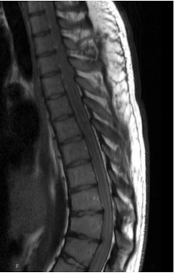
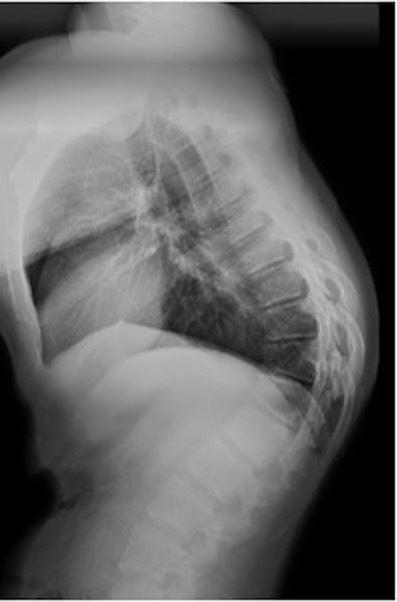
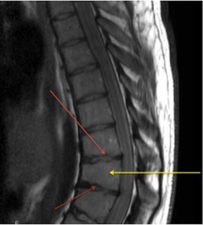
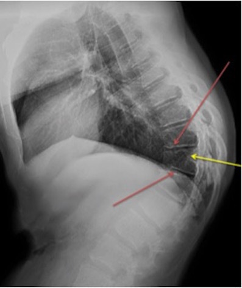
AScheuermann disease(91%)
BCompression fracture(2%)
COsteogenesis imperfecta(1%)
DPostural kyphosis(2%)
ENeuromuscular disease(4%)
Your answerA
Correct answerA. Scheuermann disease
Explanation
Scheuermann disease
The T1-weighted MR image and the radiograph show focal kyphosis of the lower thoracic spine (yellow arrows) as well as numerous Schmorl's nodes at the associated endplates (red arrows). This appearance is most suggestive of juvenile kyphosis, or Scheuermann disease. Scheuermann disease is a relatively common condition and occurs in up to 5% of the population. Its exact etiology is unknown, but it is theorized to result from aseptic necrosis of the vertebral apophyses. The thoracic spine is involved in up to 75% of cases. There is a slight male predominance, as well as a hereditary predisposition with a high degree of penetrance and variable expressivity.
To apply the label of classical Scheuermann disease, a number of criteria must be met (Sorensen classification 9):
and at least 3 adjacent vertebrae demonstrating wedging of >5°
The condition is associated with Schmorl's nodes, limbus vertebrae, scoliosis (~25%) and spondylolisthesis.
Other signs include:vertebral endplate irregularity due to extensive disc invagination,
intervertebral disc space narrowing, more anteriorly
Incorrect Answers:
B. Compression fracture is incorrect, as there is no deformity of the vertebral endplate, fracture lines, or bone marrow edema.
C. In more mild cases of osteogenesis imperfecta, one would expect more pronounced deformity, often with progression towards platyspondyly, as well as marked osteopenia.
D. In postural kyphosis, the vertebral endplates are normal. The deformity usually corrects in hyperextension unless it is longstanding.
E. In neuromuscular disease, the degree of deformity is often much greater, and the endplates would be normal in appearance.
Q16
hard QID 38110
Correct
Which of the following parameters was changed by the nuclear medicine technologist to improve the image quality seen below?
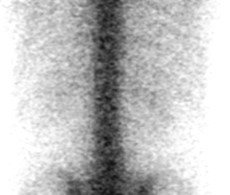
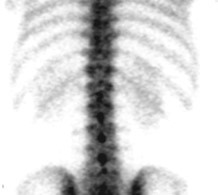
AThe patient was re-injected with a higher dose of Tc99m-MDP.(0%)
BThe scan was obtained over a longer time interval.(8%)
CThe scan was performed with a higher frame rate.(2%)
DThe photopeak was adjusted.(76%)
EThe scan was repeated with a high energy collimator.(13%)
Your answerD
Correct answerD. The photopeak was adjusted.
Explanation
The photopeak was adjusted.
Errors in preparing the gamma-camera for delayed planar imaging may have a dramatic impact on image quality. Though infrequent, occasionally a study is performed at the wrong energy peak. This error is encountered when the daily quality control flood field uniformity obtained at the 122-keV photopeak of 57Co was followed by 99mTc-diphosphonate bone imaging.
If the technologist does not adjust the gamma-camera for a 20% energy window centered on the 140-keV photopeak of 99mTc, then an off-peak image with excessive soft-tissue scatters and some reduction in 99mTc photopeak counts can be obtained (left image).
Incorrect Answers:
A. B. The issue is not the not the number of counts, so neither a higher dose of tracer nor a longer imaging time would be effective in fixing this.
C. Frame rate is important in flow studies, as it is in the arterial and blood pool phases of a multiphase bone scan. Increasing the frame rate would have the effect of increasing temporal resolution but decreasing counts, and thus, anatomic detail. Frame rate would have no effect on the artifact seen here.
E. Choosing an inappropriate collimator will degrade image resolution. A low-energy collimator such as a Low Energy All-Purpose (LEAP) or Low Energy High-Resolution (LEHR) collimator should be used with Tc99m. High-energy collimators are used for Iodine131 and F-18FDG. These collimators have thicker septa in order to reduce septal penetration by the higher-energy photons.
Q17
hard QID 43784
Correct
Which of the following is the etiology of this 44-year-old patient’s chronic posterior heel and ankle pain?
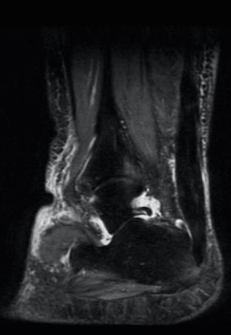
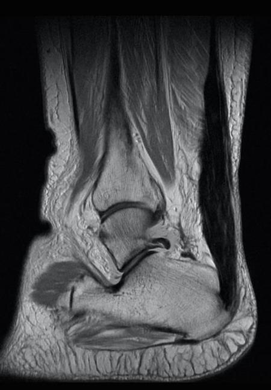
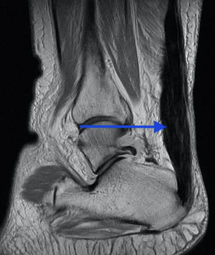
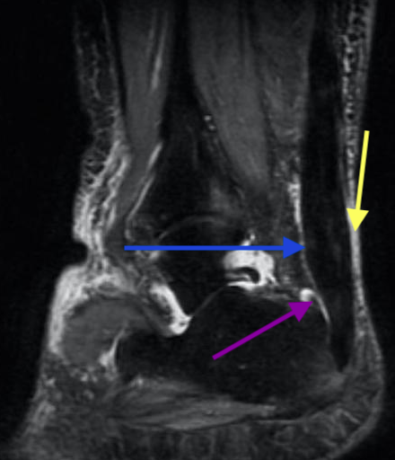
AAchilles tendon tear(1%)
BAchilles tendon rupture(1%)
CAchilles enthesopathy(18%)
DAchilles tendinosis(77%)
Your answerD
Correct answerD. Achilles tendinosis
Explanation
Achilles tendinosis
The sagittal proton density and fat-saturated images show severe Achilles tendinosis, with a markedly enlarged tendon (blue arrow). Note that there is surrounding edema (yellow arrow), as well as fluid distension of the retrocalcaneal bursa (purple arrow).
Incorrect Answers:
A. A tear would be seen as partial disruption of the tendon fibers, which would appear as horizontally, vertically, or obliquely oriented intrasubstance high signal.
B. Achilles tendon rupture would appear as complete disruption of the tendon fibers, with proximal retraction. The most common site for complete rupture is the so-called critical zone, a watershed area with relative hypo-vascularity located 2-6cm proximal to the insertion.
C. A small enthesophyte is present in this case, with mild associated focal marrow edema at the posterior calcaneal process (blue arrow). This represents proliferative bone, which forms from chronic traction and low-grade inflammation. However, there is a much more pertinent source of the patient’s pain in this case.
Q18
QID 2930
Correct
Which of the following can reduce the artifact shown by the white arrow?
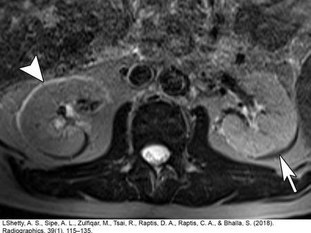
AIncreasing the field strength of the magnet(6%)
BDecreasing the matrix size(7%)
CIncreasing the field of view (FOV)(5%)
DIncreasing the receiver bandwidth(74%)
Your answerD
Correct answerD. Increasing the receiver bandwidth
Vital Concept
Bandwidth determines frequency range per pixel. Chemical shift is a fixed frequency difference between fat and water. Higher bandwidth means each pixel covers wider frequency range, so the same fixed frequency difference causes proportionally less spatial misregistration between fat and water signals.
Explanation
Increasing the receiver bandwidth
The image shows a Type 1 chemical shift or misregistration artifact. The Type 1 chemical shift is the result of the differing precessional frequencies of protons in water and fat. This difference in frequency is interpreted as a difference in spatial localization during signal registration. The outcome is the incorrect placement of signal along fat-water interfaces, resulting in a shift of the fat-containing voxels.
This appears as a dark band on one side and a light band on the opposite side in the frequency-encoded direction (with the exception of some single-shot techniques). The artifact worsens at higher field strength due to increasing the differences in frequency of fat and water protons.
Increasing the receiver bandwidth can alleviate chemical shift artifact by allowing each pixel to represent a greater frequency difference, thereby decreasing the pixel misregistration caused by chemical shift differences.
Incorrect Answers:
A. B. C. A Type 1 chemical shift can be reduced by increasing matrix size, decreasing the field of view (FOV), or increasing the receiver bandwidth.
Vital Concept: Bandwidth determines frequency range per pixel. Chemical shift is a fixed frequency difference between fat and water. Higher bandwidth means each pixel covers wider frequency range, so the same fixed frequency difference causes proportionally less spatial misregistration between fat and water signals.
Q19
hard QID 56316
Incorrect
A 48-year-old female presents with stridor and chronic wheezing. Laboratory workup shows she is positive for HLA-DR4. She undergoes an unenhanced computed tomography (CT) of the chest, shown below. Which of the following is the most likely diagnosis?
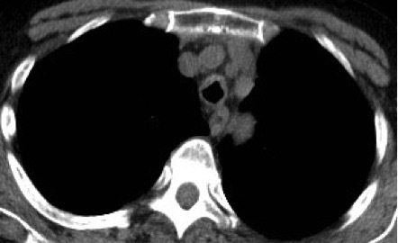
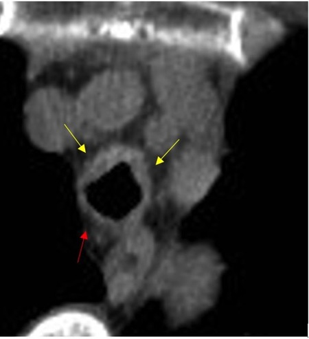
ARelapsing polychondritis(71%)
BGranulomatosis with polyangiitis(20%)
CRheumatoid arthritis(8%)
DComplication from prior intubation(1%)
Your answerC
Correct answerA. Relapsing polychondritis
Explanation
Relapsing polychondritis
CT scan reveals tracheal wall thickening with preferential involvement of the anterolateral walls (yellow arrows) and relative sparing of the posterior wall (red arrow). This pattern is seen with relapsing polychondritis due to the lack of cartilage in the posterior wall. The underlying pathogenesis is thought to be autoimmune-mediated inflammation with an association with HLA-DR4. Other sites of involvement may include the ears, nose, and ribs. Treatment options include steroids and/or immunomodulators.
Incorrect Answers:
B. Granulomatosis with polyangiitis will demonstrate nodular tracheal narrowing without sparing of the posterior wall.
C. Although rheumatoid arthritis is associated with HLA-DR4, it does not present with anterolateral tracheal wall thickening.
D. Post-intubation strictures would demonstrate smooth tracheal narrowing.
Q20
moderate QID 47261
Correct
Which of the following is the most frequent cause of upper extremity DVT?
AStasis(7%)
BHypercoagulable state(6%)
CTrauma(4%)
DIndwelling catheters(81%)
EMalignancy(2%)
Your answerD
Correct answerD. Indwelling catheters
Vital Concept
Catheter-associated thrombosis is the most common cause of upper extremity DVT, primarily from indwelling central venous catheters and port systems, accounting for the vast majority of secondary forms.
Explanation
Indwelling catheters
This diagnosis is usually made by ultrasound with the sonographic image depicting an noncompressible echogenic thrombus occluding the lumen of a deep upper extremity vein, often with accompanying catheter.
Upper-extremity deep vein thrombosis is not as common as lower extremity disease but has no less potential morbidity, with up to a third of affected patients having a pulmonary embolism. Other complications include upper-extremity pain and swelling, superior vena cava syndrome, and loss of future vascular access. Upper extremity deep venous thrombosis (DVT) is increasing in prevalence secondary to increased use of central venous catheters, with upper extremity DVT reported in up to 25% of patients with indwelling catheters in some series.All of the answer choices listed are causes of DVT.
Incorrect Answers:
A. B. C. E. Stasis and trauma are more often seen in cases of lower extremity DVT. Hypercoagulable states such as Factor V Leiden deficiency, protein C/S deficiency, pregnancy, and malignancy are less frequent causes of DVT.
Vital Concept: Catheter-associated thrombosis is the most common cause of upper extremity DVT, primarily from indwelling central venous catheters and port systems, accounting for the vast majority of secondary forms.
Q21
moderate QID 47201
Correct
Regarding a diagnosis of deep vein thrombosis, all of the following are considered deep veins except?
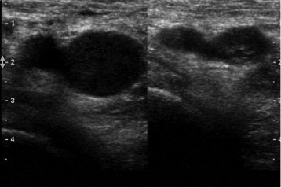
AFemoral vein(1%)
BGreat saphenous vein(82%)
CPopliteal vein(0%)
DSoleal vein(14%)
EPeroneal vein(4%)
Your answerB
Correct answerB. Great saphenous vein
Vital Concept
Deep veins lie within muscle compartments and accompany arteries (femoral, popliteal, posterior tibial, peroneal), while superficial veins lie in subcutaneous tissue (great and small saphenous). Deep vein thrombosis poses embolism risk requiring anticoagulation, whereas superficial thrombophlebitis only requires anticoagulation in specific cases.
Explanation
Great saphenous vein
Deep venous thrombosis (DVT) is a common clinical problem. Compression ultrasonography remains the imaging procedure of choice for the investigation of patients with suspected DVT as it is highly sensitive and specific. Lower-extremity DVT has an estimated annual incidence of approximately 5 per 10,000 in the general population, with the incidence increasing with advancing age. DVT typically starts distally below the knee but can extend proximally above the knee and potentially result in life-threatening pulmonary embolism. Pulmonary embolism can occur in 50%–60% of patients with untreated DVT, with an associated mortality rate of 25% to 30%. Above the knee, the deep veins include the iliac system, the common femoral vein, superficial femoral vein (which is a misnomer, as it is a deep vein and is more appropriately referred to simply as the femoral vein), the deep or profunda femoral vein, and the popliteal vein. Below the knee there are three paired deep calf veins, the anterior and posterior tibial and peroneal veins, as well as gastrocnemius muscular vein branches that join directly into the popliteal veins and soleal veins. The great and small saphenous veins are superficial. GSV DVT near the junction with the femoral vein is still of concern, as it may propagate into the deep venous system. The junction should be thoroughly evaluated sonographically. Patients with long segment superficial venous thrombosis (>5cm) and with GSV thrombosis 5 cm or less from the junction are at increased risk for DVT and PE and should be treated. The great saphenous is often used as a graft in coronary artery bypass.
Vital Concept: Deep veins lie within muscle compartments and accompany arteries (femoral, popliteal, posterior tibial, peroneal), while superficial veins lie in subcutaneous tissue (great and small saphenous). Deep vein thrombosis poses embolism risk requiring anticoagulation, whereas superficial thrombophlebitis only requires anticoagulation in specific cases.
Q22
moderate QID 20815
Correct
A 43-year-old male patient presents with a new-onset of left-sided weakness and visual disturbance. Which of the following is the most likely diagnosis?
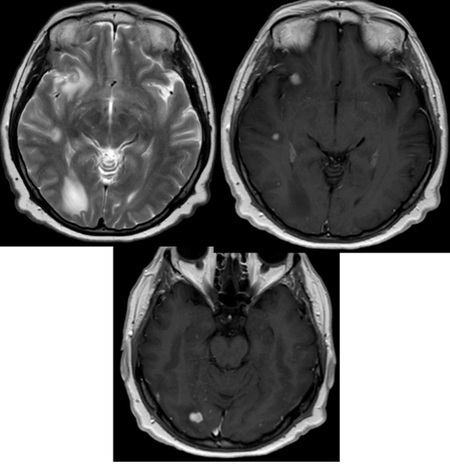
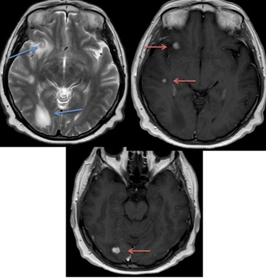
AInfarction(1%)
BGlioma(2%)
CInfection(7%)
DMetastasis(85%)
EDemyelinating disease(6%)
Your answerD
Correct answerD. Metastasis
Explanation
Metastasis
These lesions demonstrate characteristic findings of metastatic disease. There are avidly enhancing foci predominantly located at the junction of grey matter and white matter (red arrows). For their size, they demonstrate significant surrounding edema (blue arrows). Given the location, enhancement, multifocality, and marked edema for size, one should consider metastasis as the number one diagnosis. After all, the most common intracranial neoplasm is metastasis.
Incorrect Answers:
A. Infarction could be considered in the setting of bland or septic embolic disease. However, the characteristics of these lesions that go against infarction are the mass effect and enhancement. Acute bland embolic infarction should not demonstrate such enhancement. Enhancement can be seen later in the process of infarction (after 10 to 14 days). The degree of mass effect and edema related to these lesions is also less characteristic of embolic infarction. Metastasis is the better answer in this case.
B. The findings are not characteristic of gliomatous lesions, as these tend to be singular lesions (except in the setting of multifocal glioma or gliomatosis cerebri) and are not specifically characteristically located at the grey-white junctions. Additionally, gliomas of this size typically do not show such marked associated edema.
C. Infection could produce these findings in the setting of septic emboli. However, primary central nervous system (CNS) infections such as cerebritis or meningitis should produce more confluent diseases. For example, cerebritis would produce a larger, likely singular ill-defined region of T2 hyperintensity and enhancement, potentially surrounding a fluid-filled abscess cavity.
E. Demyelinating disease, while possible in the setting of multifocal active sites of demyelination with associated enhancement, is less likely in this case, as these lesions are predominantly located at the grey-white junctions and demonstrate marked mass effect and edema, more characteristic of metastatic disease.
Q23
moderate QID 41469
Correct
A nuclear medicine technologist is preparing a radiopharmaceutical when they accidentally spill 10 mCi of Tc-99m. After cleaning the spill, the technologist surveys the area. Which of the following devices should the technologist use for this purpose?
AGeiger counter(88%)
BWell counter(5%)
CIonization chamber(7%)
DGamma camera(0%)
EProportionality chamber(0%)
Your answerA
Correct answerA. Geiger counter
Explanation
Geiger counter
A Geiger-Müller counter is a specialized ionization chamber in which there is very high voltage. Any ionization causes an “avalanche” of secondary ionizations. This mode of operation of an ionization chamber allows detection of individual events but does not allow quantification of their energy. As such, Geiger-Müller counters are not useful in the presence of large amounts of radioactivity. Geiger counters become less effective/enter "dead time" upon receiving 10,000-100,000 counts per second. They are good for detecting low levels of activity and are widely used as area survey meters and area monitors. They are valuable in detecting radiation contamination.
Incorrect Answers:
B. Well counters are dose calibrators set up to provide readings in units of radioactivity used in clinical practice.
C. A number of devices routinely used in nuclear medicine clinics operate on the principle of the ionization chamber. Radiation survey meters such as the cutie-pie, some pocket dosimeters, and radionuclide dose calibrators are all examples of specialized ionization chambers. The survey meters are typically calibrated to provide units of exposure such as milliroentgens per hour.
D. Gamma cameras are scintillation devices used to detect emitted radiation in order to generate a diagnostic image.
E. Proportionality chambers are devices mainly used in research to measure alpha and beta particle radiation.
Q24
moderate QID 12308
Correct
In the given diagram, if distance A = 80 cm and distance B = 20 cm, what is the magnification factor?
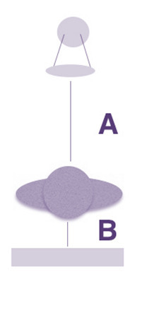
A80/20(8%)
B100/20(9%)
C100/80(76%)
D20/80(8%)
Your answerC
Correct answerC. 100/80
Vital Concept
Magnification in radiography is defined as (image size/object size) and is equal to the (SID/SOD) which is the source to image distance divided by the source to object distance.
The magnification occurs because the object is positioned closer to the x-ray source and farther from the image receptor. This geometric arrangement causes the x-ray beam to diverge more before reaching the image, creating a larger projected image of the object.
Incorrect Answers:
A.B.D. Magnification factor= SID/SOD=100/80=1.25
Vital Concept: Magnification in radiography is defined as (image size/object size) and is equal to the (SID/SOD) which is the source to image distance divided by the source to object distance.
Q25
moderate QID 56183
Correct
A 36-year-old female patient with a family history of breast cancer presents with a palpable right breast mass for three years. Which feature of this lesion depicted in the ultrasonographic image below is the most worrisome for neoplasm?
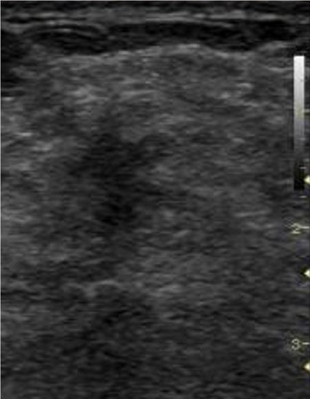
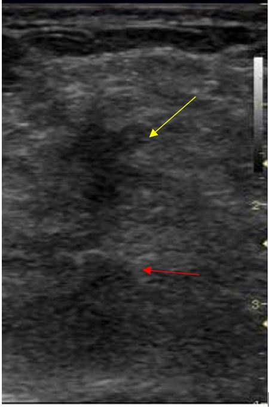
AHypoechoic echotexture(2%)
BNonparallel orientation(91%)
CPosterior acoustic shadowing(7%)
DAbsence of microcalcification(0%)
Your answerB
Correct answerB. Nonparallel orientation
Vital Concept
Not parallel orientation (taller than wide) is an independent predictor suspicious for breast malignancy with high sensitivity and specificity.
Explanation
Nonparallel orientation
The ultrasonographic image shows a spiculated hypoechoic mass (yellow arrow) with non parallel orientation and posterior acoustic shadowing (red arrow). Multiple studies have shown that the non parallel orientation demonstrates the highest positive predictive value of neoplasm relative to the other characteristics described. Subsequent biopsy of this lesion revealed an invasive ductal cancer.
Incorrect Answers:
A. Literature estimates the positive predictive value of hypoechoic echotexture in cancer detection to be lower than that of a taller than wide morphology.
C. Literature estimates the positive predictive value of posterior acoustic shadowing in cancer detection to be lower than that of a taller than nonparallel orientation.
D. The presence of microcalcifications would be a more worrisome feature than their absence.
Vital Concept: Not parallel orientation (taller than wide) is an independent predictor suspicious for breast malignancy with high sensitivity and specificity.
Q26
QID 5100
Correct
Which vessel pictured in the figure below would most likely be stenosed in subclavian steal syndrome?
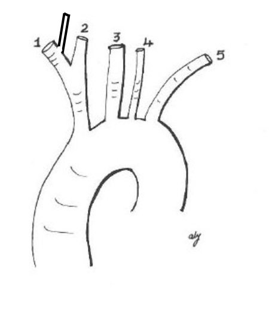
AArtery number 1, just distal to the takeoff of 2 and before the next branch.(67%)
BArtery number 3 before it branches in the neck.(2%)
CArtery number 4 after it enters the calvarium.(4%)
DArtery number 5.(27%)
Your answerA
Correct answerA. Artery number 1, just distal to the takeoff of 2 and before the next branch.
Vital Concept
Subclavian steal syndrome occurs in the setting of subclavian artery steno-occlusive disease proximal to an ipsilateral vertebral artery takeoff.
Explanation
Artery number 1, just distal to the takeoff of 2 and before the next branch.
In this figure is normal variant arterial anatomy, with the left vertebral artery coming off the aorta, as opposed to coming off the left subclavian. In this image subclavian steal syndrome would not be possible on the left, because proximal subclavian stenosis causing steal needs a distal origin vertebral artery.
This right subclavian artery can be affected by proximal stenosis leading to a subclavian steal syndrome; however, this is not the most common form of subclavian steal. The most common form is proximal stenosis of the left subclavian with reversal of flow in the left vertebral artery.
Incorrect Answers:
B. This is the left common carotid artery and is not affected in subclavian steal syndrome.
C. This is the left vertebral artery. The left vertebral artery shows reversal of blood flow and not stenosis in the most common form of subclavian steal syndrome.
D. This is the left subclavian artery and will be stenosed proximally in the most common form of subclavian steal syndrome.
Vital Concept: Subclavian steal syndrome occurs in the setting of subclavian artery steno-occlusive disease proximal to an ipsilateral vertebral artery takeoff.
Q27
easy QID 3092
Correct
Which of the following is the cause of the dark bands coursing through the anterior aspect of the posterior fossa on the non-contrast head CT shown below?
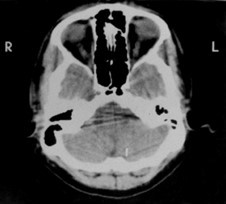
ABeam hardening(98%)
BQuantum mottle(1%)
CPartial volume averaging(0%)
DMetallic artifact(1%)
Your answerA
Correct answerA. Beam hardening
Vital Concept
Posterior fossa beam hardening from dense surrounding bone creates streak artifacts that can mimic hemorrhage or obscure true pathology. Optimized reconstruction algorithms or alternative imaging approaches may be needed for accurate diagnosis, especially in emergency settings.
Explanation
Beam hardening
Beam hardening in the posterior fossa during computerized tomography imaging is caused by attenuation of low energy x-ray beams by the radiodense temporal bones and skull base. The mean energy of the poly-energetic beam is increased due to absorption of the low energy x-ray. This results in dark bands streaking through the posterior fossa. Calibration correction or iterative correction software can be employed during post-processing to reduce effects of this artifact.
Incorrect Answers:
B. Quantum mottle refers to dose-related image noise. Mottle is caused by the fluctuation of number of photons absorbed by the intensifying screens to form the light image on the screen.
C. Partial volume averaging occurs when different tissues are represented by the same voxel. While this can cause shading artifact on the CT image, it will not produce the long dark bands seen in this case.
D. Artifact from metallic objects, if present, will cause bright streaks on a CT image.
Vital Concept: Posterior fossa beam hardening from dense surrounding bone creates streak artifacts that can mimic hemorrhage or obscure true pathology. Optimized reconstruction algorithms or alternative imaging approaches may be needed for accurate diagnosis, especially in emergency settings.
Q28
easy QID 5035
Correct
Which of the following would be expected to decrease the incidence of contrast-induced nephropathy (CIN) the most?
APre-contrast administration of IV sodium bicarbonate(1%)
BPre- and post-contrast infusion of 0.9% normal saline(98%)
CPre- and post-contrast administration of fenoldopam(0%)
DPre-contrast administration of IV N-acetylcysteine(1%)
EPre-contrast IV administration of mannitol(0%)
Your answerB
Correct answerB. Pre- and post-contrast infusion of 0.9% normal saline
Vital Concept
Volume expansion with normal saline has been shown to decrease the incidence of CIN.
Explanation
Pre- and post-contrast infusion of 0.9% normal saline
IV hydration remains the ideal method of reducing CIN. The other listed regimens have shown no clear efficacy. Consensus criteria on contrast-induced nephropathy can be found in the ACR Manual on Contrast Media.
Incorrect Answers:
A. Studies evaluating the use of sodium bicarbonate to prevent contrast-induced nephropathy have shown mixed results with no clear evidence of efficacy.
C. Studies evaluating the use of fenoldopam to prevent contrast-induced nephropathy have shown mixed results with no clear evidence of efficacy.
D. Studies evaluating the use of N-acetylcysteine are very controversial as it is thought that it may artificially reduce creatinine without actually preventing renal injury.
E. Mannitol has never been conclusively shown to reduce or prevent contrast-induced nephropathy.
Vital Concept: Volume expansion with normal saline has been shown to decrease the incidence of CIN.
Q29
hard QID 48957
Correct
Which one of the following would directly decrease spatial resolution in radiography?
AIncreasing the grid ratio(18%)
BIncreasing the phosphor thickness(67%)
CDecreasing kVp(11%)
DIncreasing mAs(4%)
Your answerB
Correct answerB. Increasing the phosphor thickness
Vital Concept
Spatial resolution in radiography decreases with larger focal spot size, increased object-to-image distance (OID), motion blur, and image receptor limitations like phosphor thickness or pixel size.
Explanation
Increasing the phosphor thickness
The thickness of the input phosphor layer is a compromise between spatial resolution and x-ray absorption efficiency. However, with a thicker input phosphor layer, more light photons are scattered laterally within the phosphor layer, thus reducing the spatial resolution.
Incorrect Answers:
A. The image contrast can be improved by increasing the grid ratio (increasing the height of the lead strips or reducing the interspace). However, this leads to increased x-ray tube loading and radiation exposure to the patient.
C. D. Studies have shown that, when the film density is kept constant, the higher the kVp, the lower the resolution and image contrast percentage. Also, the higher the mAs, the higher the resolution and image contrast percentage.
Vital Concept: Spatial resolution in radiography decreases with larger focal spot size, increased object-to-image distance (OID), motion blur, and image receptor limitations like phosphor thickness or pixel size.
Q30
moderate QID 5043
Correct
A patient just received IV iodinated contrast for a CT scan. You are called because his blood pressure has dropped to 75/35 and his heart rate is 140. He does not respond to leg elevation, oxygen, or normal saline infusion. Which of the following options is the next step?
AIV injection of 1 mg of atropine(3%)
BIV injection of 5 mg of atropine(1%)
CIV injection of 1 mL epinephrine (1:10,000) = 0.1 mg(87%)
DIV injection of 1 mL epinephrine (1:1,000) = 1 mg(8%)
EBegin CPR(0%)
Your answerC
Correct answerC. IV injection of 1 mL epinephrine (1:10,000) = 0.1 mg
Vital Concept
If hypotension with tachycardia persists after initial attempts at treatment, IV injection of 1 mL epinephrine (1:10,000 = 0.1 mg) is indicated.
Explanation
IV injection of 1 mL epinephrine (1:10,000) = 0.1 mg
The patient is experiencing hypotension with tachycardia that has not responded to the first-line measures. The next step is administering epinephrine, which is generally given at 0.1 mg increments IV. Crash carts typically carry a 1:10,000 mixture for IV use, which would be a volume of 1 mL. It is important to recognize the difference between 1:10,000 and 1:1,000 doses of epinephrine, which are 10 times stronger.
Incorrect Answers:
A and B. Atropine is used in patients with nonresponsive hypotension and bradycardia at an initial dose of 1 mg IV.
D. A 1 mL volume of 1:1,000 epinephrine is a 1 mg dose, which is a significant dose. It is important to always start small as one can always give more, but cannot take it back.
Vital Concept: If hypotension with tachycardia persists after initial attempts at treatment, IV injection of 1 mL epinephrine (1:10,000 = 0.1 mg) is indicated.
Q31
easy QID 20763
Correct
The margins of this right breast mass are best described as which of the following?
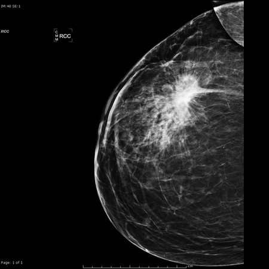
ACircumscribed(0%)
BMicrolobulated(0%)
CSpiculated(99%)
DObscured(0%)
EIndistinct(1%)
Your answerC
Correct answerC. Spiculated
Explanation
Spiculated
This hyperdense mass has spiculated margins and is highly suspicious for malignancy. This was a case of biopsy-proven invasive ductal carcinoma.
Incorrect Answers:
A. Circumscribed means at least 75% of the margin must be well-defined, remainder no worse than obscured.
B. Microlobulated shows short cycle undulations of mass margins.
D. Obscured means the margin is hidden by superimposed or adjacent normal tissue on mammography but expected to be circumscribed.
E. Indistinct means that the borders cannot be evaluated as they are hidden by overlapping tissue and are not expected to be circumscribed.
Q32
easy QID 84589
Correct
A full-term neonate is born to a mother with cystic fibrosis. By 24 hours of age, he is feeding less well and has an episode of bilious emesis. An abdominal X-ray reveals dilated bowel loops, with a “ground glass” appearance of the right lower quadrant. Which of the following tests would be both diagnostic and therapeutic?
AAbdominal ultrasound(2%)
BColonoscopy(2%)
CCT scan(1%)
DContrast enema(95%)
ERectal biopsy(1%)
Your answerD
Correct answerD. Contrast enema
Vital Concept
Meconium ileus (MI) is a form of bowel obstruction typically identified in the neonatal period due to impacted meconium at the level of the terminal ileum. Most patients with meconium ileus have underlying cystic fibrosis. A contrast enema is both diagnostic and therapeutic.
Explanation
Contrast enema
Meconium ileus is a form of bowel obstruction typically identified in the neonatal period due to impacted meconium at the level of the terminal ileum. Most patients with meconium ileus have underlying cystic fibrosis. The clinical presentation includes poor feeding, bilious emesis occurring within the first 12-24 hours after birth, and abdominal distension. Radiographs show dilated bowel loops with minimal air-fluid levels and a ground-glass appearance due to meconium mixed with air. A contrast enema demonstrates a small-caliber colon (microcolon) due to the absence of meconium in the colon during fetal life. The enema also removes the inspissated colonic material causing the obstruction. Cystic fibrosis should be ruled out in an infant with meconium ileus.
Incorrect Answers:
A. An abdominal ultrasound is useful for evaluating solid organs but is of less value for assessing intestinal pathology.
B. Colonoscopy is seldom employed in newborns.
C. A CT scan would provide less information than a contrast enema.
E. A rectal biopsy is performed for infants with a possible aganglionic colon, as is seen in Hirschsprung’s disease.
Vital Concept: Meconium ileus (MI) is a form of bowel obstruction typically identified in the neonatal period due to impacted meconium at the level of the terminal ileum. Most patients with meconium ileus have underlying cystic fibrosis. A contrast enema is both diagnostic and therapeutic.
Q33
hard QID 60576
Correct
Based on guidelines from the Nuclear Regulatory Commission (NRC), Tc-99m aluminum levels should be below which of the following levels?
A<10 microgram Al3+ per mL(77%)
B<10 milligrams Al3+ per mL(14%)
C<15 milligrams Mo per mL(3%)
D<15 micrograms free technetium per mL(6%)
Your answerA
Correct answerA. <10 microgram Al3+ per mL
Explanation
<10 microgram Al3+ per mL
Per NRC guidelines, levels of aluminum should be <10 micrograms per mL to ensure ideal chemical purity of Tc-99m. Aluminum (Al3+) breakthrough occurs when saline passes through the Mo-99 column which is composed of aluminum oxide. This level can be measured in the final product colorimetrically. Drops of both the eluate and Al3+ are placed on a testing strip and the shades of red are compared. If the eluate shade is less than that of the Al3+ shade, the test is considered a pass.
Incorrect Answers:
B. The appropriate units associated with correct answer choice is micrograms, not milligrams.
C. Radionuclide purity is assessed by measuring Mo. This is evaluated using a ratio of Mo to Tc-99m at the time of administration.
D. Radiochemical purity is assessed by measuring free technetium and is measured with thin layer chromatography.
Q34
easy QID 56200
Correct
A 53-year-old male patient presents with throat pain. Which of the following is the diagnosis?
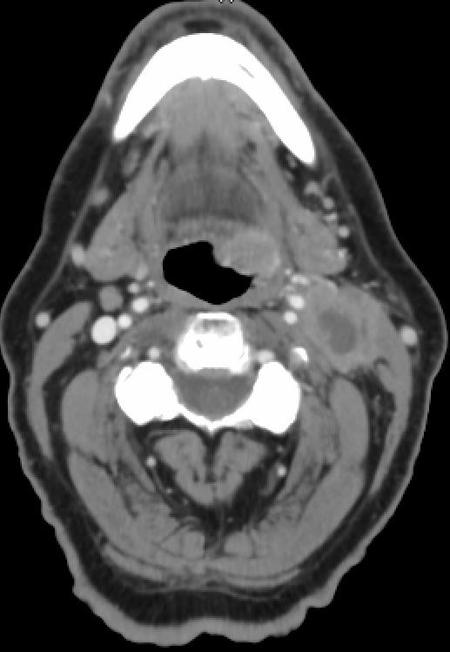
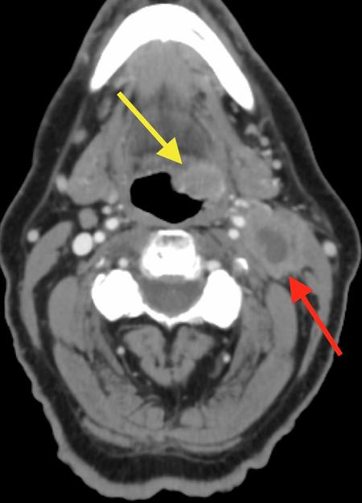
ABacterial abscess(5%)
BSquamous cell carcinoma(95%)
CPharyngitis(1%)
DTuberculosis(0%)
Your answerB
Correct answerB. Squamous cell carcinoma
Vital Concept
Oropharyngeal squamous cell carcinoma is the most likely diagnosis, particularly HPV-related given the cystic/necrotic lymphadenopathy.
Explanation
Squamous cell carcinoma
Recognition of squamous cell carcinoma is a necessity for the examinee. This is a good case to learn from, because it demonstrates a classic appearance. There is a pharyngeal mass lesion (yellow arrow) as well as a necrotic lymph node (red arrow). This constellation of findings is consistent with squamous cell carcinoma of the pharynx with nodal metastasis until proven otherwise. The CT of the neck should be read with a focus on assessment of the tumor and nodal status that will aid in determination of the T and N stage in the TNM system of tumor staging.
Incorrect Answers:
A. Bacterial abscess can sometimes have overlap with the appearance of squamous cell carcinoma, however this case is classic for neoplasm. There is asymmetric mass-like thickening in the pharynx, consistent with neoplasm. Additionally, the peripheral soft tissue component is thicker than typically seen in an abscess.
C. Pharyngitis. Given the necrotic lymph node, pharyngitis is unlikely. Additionally, the appearance is that of an enhancing pharyngeal mass.
D. Tuberculosis can have a varied appearance that can mimic many diagnoses but should be considered in patients who are immunocompromised. Additionally, the lower the lymph nodes are in the neck, the more likely it is for concomitant pulmonary involvement. If tuberculosis is suspected, a chest radiograph should be obtained.
Vital Concept: Oropharyngeal squamous cell carcinoma is the most likely diagnosis, particularly HPV-related given the cystic/necrotic lymphadenopathy.
Q35
hard QID 21187
Correct
Which of the following is the most common lesion that underlies the pathology shown on the images with no history of anticoagulation, no history of trauma, and no history of dialysis?
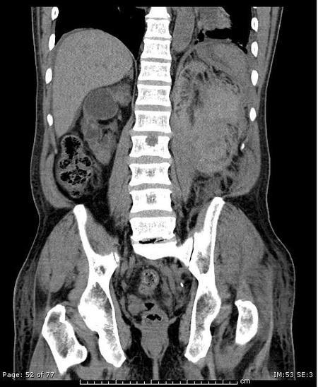
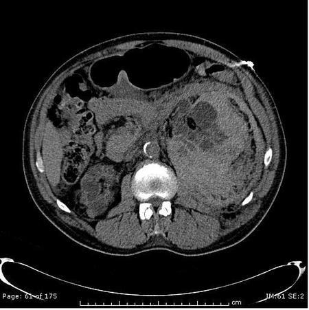
ARenal cell carcinoma(6%)
BRenal angiomyolipoma(71%)
CAdrenal adenoma(20%)
DAcquired cystic renal disease(3%)
Your answerB
Correct answerB. Renal angiomyolipoma
Explanation
Renal angiomyolipoma
This patient has a large peri-renal hemorrhage. In the absence of trauma, the most common cause of a spontaneous peri-renal hemorrhage is angiomyolipoma (AML). AML is responsible for approximately 50% of cases of spontaneous peri-renal hemorrhage. It is most common for tumors larger than 4 cm. On CT look for a mass with fat density. The fat may be obscured by the bleeding.
Incorrect Answers:
A. This is the second most common cause of spontaneous peri-renal hemorrhage. On CT look for an exophytic renal mass. The presence of calcifications in a renal mass is helpful in excluding AML (which is the most common cause of spontaneous renal hemorrhage).
C. Spontaneous hemorrhage of adrenal adenoma is exceedingly rare.
D. A ruptured hemorrhagic cyst can cause a peri-renal hematoma.
Q36
easy QID 24058
Correct
A 37-year-old patient with hypertension undergoes renal angiography as part of their workup. The patient's toxicology screen is negative. Which of the following is the diagnosis?
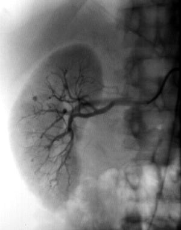
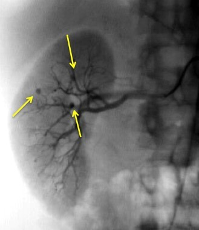
ATuberous sclerosis(2%)
BVon Hippel-Lindau disease(2%)
CPolyarteritis nodosa(92%)
DRenal artery stenosis(1%)
EFibromuscular dysplasia(3%)
Your answerC
Correct answerC. Polyarteritis nodosa
Vital Concept
Polyarteritis nodosa demonstrates multiple small aneurysms and segmental arterial stenoses creating a characteristic "beads-on-a-string" appearance on renal DSA, typically occurring at vessel bifurcations.
Explanation
Polyarteritis nodosa
The right renal angiogram shows multiple small aneurysms in the right renal arterioles (yellow arrows). This is an "Aunt Minnie," and essentially diagnostic of PAN. PAN is a systemic vasculitis causing necrotizing inflammation of small and medium-sized vessels, resulting in microaneurysms, occlusions, and strictures. Imaging features include multiple aneurysms of varying sizes, smooth segmental narrowing of vessels, and stenosis and occlusions of larger vessels. Though the renal vascular bed is most frequently affected, it can occur in any viscera.
Incorrect Answers:
A. Tuberous sclerosis presents with multiple renal angiomyolipomas, which vary in size from a few mm to many cm and appear as hypervascular masses.
B. Von Hippel-Lindau disease carries an increased risk of renal cell carcinoma, which typically appears angiographically as a mass with abnormal neovascularity.
D. Renal artery stenosis is a cause of hypertension, but it is not seen here.
E. Fibromuscular dysplasia, also a cause of primary hypertension, has a classic “beads on a string” appearance on angiography.
Vital Concept: Polyarteritis nodosa demonstrates multiple small aneurysms and segmental arterial stenoses creating a characteristic "beads-on-a-string" appearance on renal DSA, typically occurring at vessel bifurcations.
Q37
easy QID 56289
Correct
A lumbar MRI without contrast is obtained on a 42-year-old female patient for back pain. Which of the following structure is identified by the blue arrow?
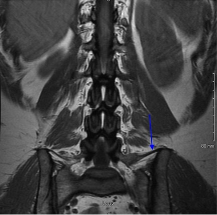
ATransverse process(0%)
BIliacus muscle(1%)
CInferior articular facet(0%)
DIliolumbar ligament(99%)
Your answerD
Correct answerD. Iliolumbar ligament
Vital Concept
The iliolumbar ligament arises from the L5 transverse process, appearing as a hypointense band on magnetic resonance imaging extending to the iliac crest. It serves as a reliable marker for identifying the L5 level and numbering lumbosacral transitional vertebrae.
Explanation
Iliolumbar ligament
This is a structure that is commonly used to identify L5 in the setting of transitional lumbosacral anatomy. There are various techniques for vertebral body numbering; however this is traditionally considered one of the most reliable. There is some evidence that although this is highly reliable in identifying the inferior most lumbar vertebral body, this is not always L5, as there may be additional segmentation abnormalities more cranially located in the spine.
Incorrect Answers:
A. The transverse process is in continuity with the iliolumbar ligament; however, the arrow indicates the ligament itself. The transverse process is seen more centrally, with a normal marrow signal identical to the vertebral body, rather than the dark signal in the ligament, as expected.
B. The iliacus muscle is located on the medial aspect of the iliac bone and is located inferior to the marked structure.
C. The inferior articular facet is located much more centrally in the posterior column of the spine. The marked structure is far too lateral to be this structure.
Vital Concept: The iliolumbar ligament arises from the L5 transverse process, appearing as a hypointense band on magnetic resonance imaging extending to the iliac crest. It serves as a reliable marker for identifying the L5 level and numbering lumbosacral transitional vertebrae.
Q38
moderate QID 48132
Correct
The constellation of findings depicted is most often seen in which of the following?
AKlippel-Feil syndrome(81%)
BSpina bifida(1%)
CCongenital kyphoscoliosis(10%)
DTorticollis(1%)
EJeune syndrome(7%)
Your answerA
Correct answerA. Klippel-Feil syndrome
Vital Concept
Sprengel deformity on radiograph shows congenital elevation of the scapula, often with an omovertebral bone connecting the scapula to the cervical spine, commonly associated with Klippel-Feil syndrome.
Explanation
Klippel-Feil syndrome
The radiograph shows a Sprengel deformity, or congenital elevation of the scapula (blue arrow). It is the most common shoulder deformity and results from failure of caudal migration of the scapula during early fetal development. It is often noticed at birth and has both cosmetic and functional implications. These possible co-existing anomalies need to be looked for in any patient presenting with Sprengel deformity.
It is seen most often in Klippel-Feil syndrome, which is also characterized by cervical vertebral fusion.
Incorrect Answers:
B. C. and D. This process is less commonly a feature of spina bifida, congenital kyphoscoliosis, and secondarily in cases of torticollis.
E. Asphyxiating thoracic dysplasia (also known as Jeune syndrome) is a type of rare short-limb skeletal dysplasia, which is primarily characterized by a constricted long, narrow thoracic cavity. It has a high mortality rate due to respiratory compromise. The appearance of the thoracic cavity in this case is secondary to the elevated scapula.
Vital Concept: Sprengel deformity on radiograph shows congenital elevation of the scapula, often with an omovertebral bone connecting the scapula to the cervical spine, commonly associated with Klippel-Feil syndrome.
Q39
easy QID 2948
Correct
Which of the following is the diagnosis?
AChondrosarcoma(1%)
BUndifferentiated pleomorphic sarcoma(2%)
CLiposarcoma(1%)
DOsteosarcoma(1%)
EElastofibroma(95%)
Your answerE
Correct answerE. Elastofibroma
Vital Concept
Elastofibroma dorsi is a benign soft-tissue tumor with a characteristic location and imaging appearance. Treatment is unnecessary, although excision may be helpful for patients who are symptomatic.
Explanation
Elastofibroma
Noncontrast axial CT depicts bilateral chest wall masses in the inferior scapular region between the scapula and the chest wall. Bilateral chest wall masses in the subscapular region are most compatible with elastofibroma. The specific anatomical location combined with bilateral occurrence and typical asymptomatic presentation allows presumptive diagnosis without tissue confirmation in appropriate clinical settings.
Incorrect Answers:
A. Chondrosarcomas are malignant cartilaginous tumors. They are most commonly found in older patients within the long bones and can arise de novo or secondary from an existing benign cartilaginous neoplasm. On imaging, these tumors have ring-and-arc chondroid matrix mineralization with aggressive features such as lytic pattern, deep endosteal scalloping and soft-tissue extension.
B. Undifferentiated pleomorphic sarcoma (UPS), previously known as malignant fibrous histiocytoma (MFH), is considered the most common type of soft tissue sarcoma. Although UPS can occur almost anywhere in the body, they have a predilection for extremities: lower and upper extremities.
C. Liposarcomas are malignant tumors of fatty tissue. They are usually seen in the extremities (75%), most commonly the thigh, and are less commonly seen in the retroperitoneum, groin or elsewhere.
D. Osteosarcomas are malignant bone-forming tumors. Primary osteosarcomas typically occur at the metadiaphysis of long bones in the appendicular skeleton.
Vital Concept: Elastofibroma dorsi is a benign soft-tissue tumor with a characteristic location and imaging appearance. Treatment is unnecessary, although excision may be helpful for patients who are symptomatic.
Q40
hard QID 86017
Correct
A 54-year-old woman is evaluated for headaches. She reports they started 5 months ago and have been increasing in severity. She also notes a 10-pound weight loss, heat intolerance, vision changes, and an enlarging neck. Her family and past medical history are unremarkable. What is the most appropriate next step in the evaluation of this patient?
Unlike Grave’s disease (in which the thyroid is stimulated by antibodies), a pituitary adenoma is associated with increased TSH levels. Diagnosis is confirmed with a magnetic resonance image (MRI) of the brain and pituitary.
Explanation
Brain MRI
This patient most likely has a TSH-secreting pituitary adenoma, a rare cause of hyperthyroidism in adults. These adenomas secrete other pituitary hormones in 25% of patients (most commonly growth hormone and prolactin). Patients present with unintentional weight loss, heat intolerance, diarrhea, tremors, palpitations, headaches, and visual field defects. The goiter is secondary to excess TSH secretion.
Laboratory abnormalities include elevated TSH, free T4, and T3. The initial evaluation includes measuring the alpha subunit, sex hormone-binding globulin, and other pituitary hormones. Definitive diagnosis is with brain MRI to identify the pituitary adenoma.
Incorrect Answers:
A. A sestamibi scan is a radioactive scan using 99m-Tc. It is used to identify parathyroid adenomas, which cause symptoms of hypercalcemia.
B. An ultrasound of the thyroid gland can detect thyroid nodules. Although this patient has a goiter on examination, her elevated thyroid-stimulating hormone (TSH) level indicates the goiter is a symptom, not the cause, of the patient’s underlying condition.
D. Thyroid-stimulating immunoglobulin antibodies are positive in patients with Graves’ disease. This patient has hyperthyroidism with an elevated TSH, which is more consistent with a pituitary adenoma. TSH is low in patients with Graves’ disease.
Vital Concept: Unlike Grave’s disease (in which the thyroid is stimulated by antibodies), a pituitary adenoma is associated with increased TSH levels. Diagnosis is confirmed with a magnetic resonance image (MRI) of the brain and pituitary.
Q41
easy QID 3056
Incorrect
A 48-year-old female with a history of left breast cancer status post-neoadjuvant chemotherapy and left mastectomy presents for a restaging examination. Selected images from a positron emission tomography (PET) scan of the neck are shown below. Based on these images, which of the following is most likely represented by these findings?
AMetastatic breast cancer(4%)
BBrown fat(94%)
CLymphoma(0%)
DArtifact(2%)
Your answerA
Correct answerB. Brown fat
Vital Concept
Bilateral increased FDG uptake in the neck of breast cancer patients most likely represents brown adipose tissue activation, which characteristically involves cervical/supraclavicular regions. Low CT attenuation and bilateral distribution help distinguish brown adipose tissue from pathologic lymphadenopathy.
Explanation
Brown fat
Brown adipose tissue is rich in mitochondria, containing a unique 32-kDa protein (thermogenin) that uncouples oxidation and phosphorylation of adenosine diphosphate, reduces ATP production, and consequently enhances thermogenesis.
Symmetric uptake of F-18-FDG within the fat is consistent with brown fat and repeat imaging after the patient has been warmed up can help alleviate the uptake seen within these regions.
Incorrect Answers:
A. Selected PET/CT fusion images reveal areas of symmetric FDG activity corresponding to fat in the upper chest and neck. Brown fat should be suggested as the most likely etiology given the characteristic imaging appearance.
C. Again, imaging findings are characteristic of brown fat. Lymphoma should not be invoked, especially in a patient with another known primary malignancy and lack of nodal enlargement on the images provided.
D. Artifacts on PET/CT imaging include those related to metallic implants, respiratory motion, contrast medium, and contamination (commonly at the injection site or related to urinary contamination). The imaging findings above do not correspond to any familiar artifact and can be explained by the correct diagnosis of brown fat.
Vital Concept: Bilateral increased FDG uptake in the neck of breast cancer patients most likely represents brown adipose tissue activation, which characteristically involves cervical/supraclavicular regions. Low CT attenuation and bilateral distribution help distinguish brown adipose tissue from pathologic lymphadenopathy.
Q42
moderate QID 24062
Correct
A 62-year-old patient with a history of transient ischemic attacks undergoes an internal carotid ultrasound, shown below. Which of the following is the provider’s assessment?
ANormal(6%)
B< 50% stenosis(6%)
C50-69% stenosis(1%)
D70% stenosis(4%)
ENear-total occlusion(83%)
Your answerE
Correct answerE. Near-total occlusion
Vital Concept
Near-occlusion presents with paradoxically low velocities despite severe stenosis due to critically reduced flow volume, requiring careful grayscale evaluation for residual lumen and correlation with waveform morphology rather than relying solely on velocity measurements
Explanation
Near-total occlusion
High-resistance waveform with low velocity (green arrow) and poorly visualized grayscale flow suggests near-occlusion of the internal carotid artery. The high-resistance pattern with reversal of flow (red arrow) indicates compromised downstream flow, while low velocities with poor flow visualization on grayscale imaging reflects severely reduced luminal diameter with trickle flow through a critically stenotic segment.
Near occlusion: Variable velocities (high, low, or undetectable), visible plaque
Total occlusion: Undetectable flow, visible plaque with no detectable lumen
Incorrect Answers:
A. There is a reversal of diastolic flow (red arrow) which is not a normal finding.
B. Findings consistent with <50% stenosis: PSV <180 cm/sec, ICA/CCA ratio <2.0, EDV <40 cm/sec
C. Findings consistent with 50-69% stenosis: PSV 180-230 cm/sec, ICA/CCA ratio 2.0-4.0, EDV 40-100 cm/sec
Alternative: PSV 125-180 cm/sec if ICA/CCA ratio ≥2.0 with significant plaque
D. Findings consistent with ≥70% stenosis: PSV >230 cm/sec, ICA/CCA ratio >4.0, EDV >100 cm/sec
Vital Concept: Near-occlusion presents with paradoxically low velocities despite severe stenosis due to critically reduced flow volume, requiring careful grayscale evaluation for residual lumen and correlation with waveform morphology rather than relying solely on velocity measurements
Q43
easy QID 22621
Correct
A 2-week-old male patient presents for evaluation of an abnormality noted on prenatal ultrasound. Which of the following is the most likely diagnosis?
AUreteropelvic junction (UPJ) obstruction(2%)
BPosterior urethral valves (PUV)(96%)
CVesicoureteral reflux(1%)
DUreteral duplication(1%)
EAutosomal dominant polycystic kidney disease(0%)
Your answerB
Correct answerB. Posterior urethral valves (PUV)
Vital Concept
Posterior urethral valves occur only in males. VCUG shows dilated posterior urethra with abrupt transition at the prostatic-membranous junction and normal anterior urethra. Bladder trabeculation and bilateral reflux are common. Ultrasound may show hydronephrosis and thick-walled bladder.
Explanation
Posterior urethral valves (PUV)
The prenatal ultrasound (upper image) shows a diffusely dilated collecting system (blue arrow). The voiding cystourethrogram (lower image) reveals the cause, a posterior urethral valve (red arrow – seen as the focal narrowing at the origin of the prostatic urethra). Posterior urethral valves are a form of chronic urethral obstruction seen only in male patients due to the presence of abnormally fused valves within the posterior urethra.
This produces the classic imaging appearance of the “keyhole” urinary bladder with an abnormally dilated posterior urethra. The valves may be seen as a focal linear filling defect within the posterior urethra. The best imaging modality for diagnosis is voiding cystourethrogram (VCUG) or magnetic resonance (MR) urography. Obstruction may be severe enough to produce oligohydramnios in utero with associated pulmonary hypoplasia. Additionally, long-term renal failure can be seen if not appropriately treated. The typical treatment is endoscopic ablation of the valve tissue during the neonatal period.
Incorrect Answers:
A. Ureteropelvic junction (UPJ) obstruction is the most common etiology of urinary tract obstruction in the pediatric population. The most common appearance is that of marked hydronephrosis that stops focally at the ureteropelvic junction. The ureter distal to the ureteropelvic junction is normal in caliber. On IVP, the typical appearance is that of delayed nephrograms with late excretion of contrast into the dilated renal pelvis. On nuclear medicine renal scintigraphy, the degree of obstruction is typically given by the time to half of the peak activity within the renal pelvis. If t ½ is less than 10 min, it is deemed normal. If t ½ is greater than 20 min, obstruction is diagnosed. T ½ between 10 to 20 min is considered indeterminate. Ureteropelvic junction obstruction is thought to be related to abnormal innervation of the smooth muscle at the UPJ, abnormal smooth muscle at the UPJ, or a crossing vessel or scar at the UPJ. It is typically treated with pyeloplasty.
C. Vesicoureteral reflux (VUR) is a relatively common cause of hydronephrosis/ hydroureter, related to abnormal retrograde urinary flow from the urinary bladder into the ureters. It is classically thought to be related to abnormally short or abnormally angulated ureteral insertion into the urinary bladder. It is frequently associated with pyelonephritis and chronic renal scarring. An internationally accepted reflux grading system has been developed for the purposes of standardizing reporting of reflux severity based on VCUG findings, as follows:
VUR is typically treated with antibiotic prophylaxis, and if it fails to spontaneously resolve, surgical ureteral reimplantation may be performed. Alternatively, endoscopic injections at the ureteral insertion may be performed.
D. Ureteropelvic duplications are a relatively common cause of urinary tract obstruction in pediatric patients. They are typically characterized by the presence of two renal pelves and/or two ureters. The duplicated ureters may drain separately into the urinary bladder or join together at some point along their length. The drainage pattern is said to be governed by the Weigert-Meyer rule, which states that the upper pole moiety most frequently inserts ectopically inferomedial to the lower pole insertion and is more likely to obstruct. The lower pole moiety more frequently inserts normally and more frequently refluxes. The upper pole moiety may insert at any point along the distal genitourinary tract including the bladder, urethra, or vagina. If the ureter is inserted at any point distal to the urinary sphincter, the patient will likely present with ongoing continuous urinary leakage. The upper pole moiety insertion is frequently associated with a ureterocele at its insertion, which is often the culprit of the urinary obstruction.
E. Autosomal dominant polycystic kidney disease (ADPKD) is typified by the presence of enlarged kidneys with innumerable cysts. Other organs are frequently affected by cyst formation, including liver, pancreas, and rarely, pelvic organs including ovaries and testes. CT may also demonstrate complicated cysts with associated hyperdense blood products. Care must be taken to evaluate for enhancing nodularity, as renal cell carcinoma can be difficult to detect in these cases. The findings of ADPKD typically develop in adult patients and are uncommon in the pediatric setting.
Vital Concept: Posterior urethral valves occur only in males. VCUG shows dilated posterior urethra with abrupt transition at the prostatic-membranous junction and normal anterior urethra. Bladder trabeculation and bilateral reflux are common. Ultrasound may show hydronephrosis and thick-walled bladder.
Q44
moderate QID 56731
Correct
An 81-year-old with multiple medical problems presents with symptoms of cord compression. The emergency room physician would like to order an MRI but reports the patient has had both aortic valve replacement and mitral valve annuloplasty 5 years ago. Which of the following is the best course of action?
AAdvise against MRI.(3%)
BAlthough mitral valve annuloplasty rings are MRI-safe, aortic valve replacements are not: MRI is contraindicated."'(2%)
CBoth aortic valve replacement and mitral valve annuloplasty are MRI-conditional or MRI-safe.(84%)
DExplain benefits versus relatively high risk of adverse effects from undergoing MRI and obtain informed consent.(10%)
Your answerC
Correct answerC. Both aortic valve replacement and mitral valve annuloplasty are MRI-conditional or MRI-safe.
Explanation
Both aortic valve replacement and mitral valve annuloplasty are MRI-conditional or MRI-safe.
Both aortic valve replacement and mitral valve annuloplasty are MRI-conditional or MRI-safe, and the exam can be performed. Cardiac valves and annuloplasty rings should not be a contraindication to undergoing an MRI.
Both have been extensively tested in magnetic field strengths of up to 4.7 tesla; it is thought that native cardiac-motion forces may be greater than that of magnetic fields used in routine practice.
Studies also reveal no clinically significant heating of cardiac valves from an MRI exam. To date, no reports of any adverse events have been reported involving cardiac valves and MRI.
Incorrect Answers:
A. The patient’s history of cardiac valve replacement does not pose a significant MRI safety concern.
B. Aortic valve replacements are considered MRI-conditional or MRI-safe.
D. Proceeding with the MRI does not pose a high risk of an adverse event, and formal informed consent is not indicated.
Q45
easy QID 2860
Correct
What is the most likely diagnosis?
AMeningioma(2%)
BArachnoid cyst(3%)
CSpinal cord infarct(2%)
DHemangioblastoma(93%)
Your answerD
Correct answerD. Hemangioblastoma
Vital Concept
Spinal hemangioblastomas are benign vascular intramedullary lesions in the spinal cord and typically present on MRI as discrete nodules.
Explanation
Hemangioblastoma
Spinal hemangioblastomas are the third most common intramedullary spinal neoplasm. Hemangioblastomas are benign vascular lesions, slow growing and usually treated by surgical resection.
On magnetic resonance imaging (MRI), they typically are discrete nodules but there can be cord expansion. The images demonstrate an intramedullary lesion in the cervical spinal cord with cystic components and a solid, enhancing nodule. The top image is a T2-weighted image and the bottom is T1-weighted post-contrast image. From the options given, the most likely diagnosis is hemangioblastoma.
Incorrect Answers:
A. Meningiomas in the spinal canal are usually intradural and extramedullary.
B. An arachnoid cyst is extra-medullary and would not show an enhancing nodule.
C. A spinal cord infarct can cause spinal cord expansion but would not show a well-defined enhancing nodule.
Vital Concept: Spinal hemangioblastomas are benign vascular intramedullary lesions in the spinal cord and typically present on MRI as discrete nodules.
Q46
moderate QID 22400
Incorrect
A 64-year-old female patient presents with worsening hypertension after undergoing renal artery stenting approximately two years ago. According to these images, which of the following is the most likely diagnosis?
AStent thrombosis(5%)
BStent embolism(1%)
CIn-stent restenosis(91%)
DRenal artery dissection(1%)
EFibromuscular dysplasia(2%)
Your answerE
Correct answerC. In-stent restenosis
Vital Concept
In-stent restenosis of renal artery stents is diagnosed on angiography as luminal stenosis greater than fifty percent within the stent. This represents hemodynamically significant restenosis requiring intervention.
Explanation
In-stent restenosis
Pre-contrast injection digital subtraction angiography shows a left renal artery stent in place (blue arrow). Following contrast injection, focal narrowing of the stented ostial segment is seen (red arrow). In-stent restenosis is not an insignificant issue in the treatment of hypertension related to atherosclerotic renal artery stenosis. Meta-analyses have shown 6-12 month restenosis rates of 26% in balloon angioplasty alone, and 16% after stent placement. A combination of intimal hyperplasia and atheroma formation is thought to be responsible for in-stent restenosis after renal artery stenting. This may be diagnosed by a decrease in luminal diameter by 50% on angiography or renal artery velocity greater than 250 cm/sec. These patients frequently require repeat angioplasty, which is successful to varying degrees.
Incorrect Answers:
A. B. In the setting of stent thrombosis or embolic occlusion, one would not expect to see such smooth luminal narrowing and continued contrast opacification of the renal artery. One may expect to see a more abrupt cut-off of the renal artery contrast column with loss of distal opacification.
D. Renal artery dissection is a known complication of renal angiography, angioplasty, and stent placement. In the case of dissection, one would expect to see a linear lucency along the length of the contrast column, representing the dissection flap. There may be varying occlusion of distal segmental renal arteries depending on the dissection anatomy.
E. Fibromuscular dysplasia (FMD) is characterized by a “beaded” angiographic appearance of the affected vessel. It is a relatively common cause of renovascular hypertension in young female patients. There are multiple types of FMD that affect differing histologic layers of the vascular wall, but the most common type is medial fibroplasia, affecting the tunica media and producing the "string of beads" appearance. The treatment of choice is angioplasty without stenting, especially in initial therapy. Subsequent therapies could include stenting in resistant cases, but the initial therapy should be balloon angioplasty without a stent.
Vital Concept: In-stent restenosis of renal artery stents is diagnosed on angiography as luminal stenosis greater than fifty percent within the stent. This represents hemodynamically significant restenosis requiring intervention.
Q47
easy QID 4932
Correct
A 62-year-old female presents with a palpable lump in the right upper outer breast. Mammographic images (not shown) demonstrated an area of concern, with follow-up ultrasonography recommended. Based on ultrasonography images below, correct ACR BI-RADS assessment for this patient is:
AACR BIRADS 0.(1%)
BACR BIRADS 2.(2%)
CACR BIRADS 3.(6%)
DACR BIRADS 5.(91%)
EACR BIRADS 6.(0%)
Your answerD
Correct answerD. ACR BIRADS 5.
Vital Concept
BI-RADS 5 lesions on ultrasound show highly suspicious features including irregular shape with angular or spiculated margins, marked hypoechogenicity, posterior acoustic shadowing, and often taller-than-wide orientation. These features indicate >95% likelihood of malignancy requiring immediate tissue sampling.
Explanation
ACR BIRADS 5.
Imaging findings are highly suggestive of malignancy, including irregular angular and spiculated margins and hypoechogenicity. All in all, the scenario here best correlates with a BIRADS category 5, although 4 would be acceptable as well.
Incorrect Answers:
A. ACR BIRADS category 0 is reserved for incomplete assessment on screening mammography.
B. ACR BIRADS category 2 is benign findings. This mass is unlikely to be benign
C. ACR BIRADS category 3 corresponds to "probably benign" findings. This case demonstrates an irregular hypoechoic mass, highly suggestive of malignancy.
E. ACR BIRADS category 6 is reserved for biopsy-proven malignancy.
Vital Concept: BI-RADS 5 lesions on ultrasound show highly suspicious features including irregular shape with angular or spiculated margins, marked hypoechogenicity, posterior acoustic shadowing, and often taller-than-wide orientation. These features indicate >95% likelihood of malignancy requiring immediate tissue sampling.
Q48
moderate QID 3078
Correct
A 9-year-old female patient presents with abdominal pain and a palpable pelvic mass on physical examination. A representative image from a contrast-enhanced computed tomography (CT) scan of the abdomen/pelvis, as well as several 24-hour static images from an iodine-123 iobenguane (MIBG) scan, are shown below. Which of the following is the most likely diagnosis?
ADermoid cyst(4%)
BNeuroblastoma(85%)
CRhabdomyosarcoma(11%)
DUterine fibroid(0%)
Your answerB
Correct answerB. Neuroblastoma
Vital Concept
I-123 mIBG scintigraphy is the gold standard with 90% sensitivity/specificity for neuroblastoma, but a tenth of tumors are mIBG-negative requiring alternative imaging with F-18 FDG or Ga-68 DOTA.
Explanation
Neuroblastoma
The CT demonstrates the presence of a large solid pelvic mass of complex density, demonstrating heterogeneous enhancement. The mass contains multiple coarse calcifications. The iodine-123 MIBG scan shows intense radiopharmaceutical uptake within the pelvis.
This constellation of findings is most compatible with neuroblastoma.
Incorrect Answers:
A. Dermoid cysts will not enhance on CT, nor will they demonstrate increased radiopharmaceutical uptake on an iodine-123 MIBG scan.
C. While rhabdomyosarcoma can occur in the pelvis in pediatric patients, it does not demonstrate increased uptake on I-123 MIBG scans.
D. The CT appearance and MIBG scan findings are not compatible with a uterine fibroid.
Vital Concept: I-123 mIBG scintigraphy is the gold standard with 90% sensitivity/specificity for neuroblastoma, but a tenth of tumors are mIBG-negative requiring alternative imaging with F-18 FDG or Ga-68 DOTA.
Q49
easy QID 47450
Correct
A 29-year-old female patient presents with complaints of infertility. Which of the following is the diagnosis?
ASeptate uterus(1%)
BBicornuate unicollis uterus(6%)
CUterus didelphys(72%)
DUnicornuate uterus(21%)
Your answerC
Correct answerC. Uterus didelphys
Vital Concept
Uterus didelphys on MRI shows two separate unicornuate uterine cavities with duplication of the cervix, representing a complete fusion anomaly.
Explanation
Uterus didelphys
In the axial T2 image, there are two uterine horns (red arrows) divided by a deep cleft and two cervices (blue arrows). Mullerian duct anomalies result from abnormal development or fusion or incomplete resorption of mullerian structures during the development of the female genitourinary tract. Patients may present with dysfunctional uterine bleeding, infertility, or may be asymptomatic. Mullerian duct anomalies are classified by AFS as follows:
Class I: Mullerian agenesis or hypoplasia.
Class II: Unicornuate uterus; characterized as aplasia or hypoplasia of one uterine horn.
Class III: Uterus didelphys; characterized as a complete uterine duplication. Here, there are two uterine horns divided by a deep cleft, two cervices, and frequently, a complete vaginal septum.
Class IV: Bicornuate uterus; characterized as two uterine horns, which communicate inferiorly. The fundal cleft between the two uterine horns is at least 1 cm deep, and the uterine horns should form an angle greater than 105 degrees. If there is a single cervix, it is classified as bicornuate unicollis. If there are two cervices, it is classified as bicornuate bicollis. The axial T2 weighted image shows two separate cervices.
Class V: Septate uterus, in which there is incomplete resorption of a uterine septum. There is a septum separating the uterine cavity at its upper portion. The lower portion of the septum is often fibrous; however, the entire septum may be fibrous. An entirely fibrous uterine septum is more associated with infertility related to abnormal embryonal implantation. Fibrous component is characteristically T2 hypointense on MR examination. The uterine fundus is usually flat or convex rather than with a fundal cleft, and the angle between the cornuae is characteristically less than 75°.
Class VI: Arcuate uterus, in which there may be a mild convexity of the internal fundal contour, with no significant fibrous component. The external contour is normal.
Vital Concept: Uterus didelphys on MRI shows two separate unicornuate uterine cavities with duplication of the cervix, representing a complete fusion anomaly.
Q50
hard QID 24478
Incorrect
Which of the following whole-body doses represents the minimum threshold, above which the administration of a radiopharmaceutical to the wrong patient must be reported?
A3 mSv(6%)
B5 mSv(20%)
C10 mSv(9%)
D50 mSv(63%)
E500 mSv(3%)
Your answerB
Correct answerD. 50 mSv
Vital Concept
A medical event requires the whole body dose to differ from prescribed by more than 50 mSv effective dose equivalent AND at least one additional criterion (such as 20% dose variance, wrong patient, wrong route, wrong drug, or wrong treatment site exceeding 50% intended dose).
Explanation
50 mSv
The scenario presented constitutes a medical event. A medical event is defined as administration to the wrong patient, administration of the wrong radiopharmaceutical, administration via the wrong route, or administration of a dose > 20% above or below the prescribed dose.
Reportable events require notifying the Nuclear Regulatory Commission. The event is reportable if the radiopharmaceutical dose administered to the wrong patient exceeds 50 mSv whole-body and/or 500 mSv single organ. The whole-body dose limit happens to be the same dose limit as the annual whole-body occupation exposure limit.
Incorrect Answers:
A. B. C. E. These are incorrect options, as discussed above.
Vital Concept: A medical event requires the whole body dose to differ from prescribed by more than 50 mSv effective dose equivalent AND at least one additional criterion (such as 20% dose variance, wrong patient, wrong route, wrong drug, or wrong treatment site exceeding 50% intended dose).